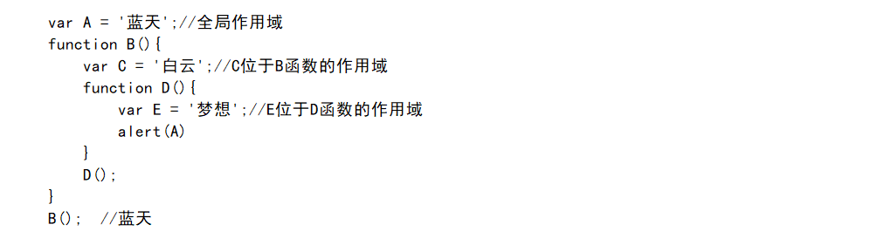

1.Js中的基本类型
- JavaScript 有类型值，但没有类型变量。JavaScript 提供了以下几种内置类型：
- string 字符串
- number 数字
- boolean 布尔值
- null 和 undefined
- object
- symbol (ES6 中新增的)
Symbol：
引入原因：ES5的对象属性名都是字符串，很容易造成属性名冲突。比如，使用了一个他人提供的对象， 想为这个对象添加新的方法，新方法的名字就有可能与现有方法产生冲突。ES6中Symbol的引入保证了每一个属性的名字都是 独一无二的，从根本上防止了属性名的冲突
js数据类型分类: ES6又推出了Symbol数据类型
注：把基本类型进行包装(包装基本类型)就成了引用类型
2.基本类型和引用类型的区别
存储
基本类型值在内存中占据固定大小的空间,因此被保存在栈内存中
引用类型的值是对象, 保存在堆内存中. 包含引用类型的变量实际上包含的并不是对象本身, 而是一个指向改对象的指针
复制
基本类型的值从一个变量向另一个变量复制 会创建这个值的一个副本
引用类型的值 从一个变量向另一个变量复制复制的其实是指针, 因此两个变量最终都指向同一个对象
检测类型
确定一个值是哪种基本类型可以用typeof操作符,
而确定一个值是哪种引用类型可以使用instanceof操作符
区别图解分析
3.JS中的强制转型是指什么？
在 JavaScript 中，两种不同的内置类型间的转换被称为强制转型。强制转型在 JavaScript 中有两种形式：显式和隐式。
4.解释JS中的相等性?
JavaScript 中有严格比较和类型转换比较:
严格比较（例如 ===）在不允许强制转型的情况下检查两个值是否相等；
抽象比较（例如 ==）在允许强制转型的情况下检查两个值是否相等
如果被比较的任何一个值可能是 true 或 false，要用 ===，而不是 ==；
如果被比较的任何一个值是这些特定值（0、“”或 []），要用 ===，而不是 ==；
在其他情况下，可以安全地使用 ==。它不仅安全，而且在很多情况下，它可以简化代码，并且提升代码可读性。
5.解释Javascript中的Null和undefined以及not defined？
JavaScript 中有两种底层类型：null 和 undefined。它们代表了不同的含义：
undefined是javascript语言中定义的五个原始类中的一个，换句话说，undefined并不是程序报错， 而是程序允许的一个值。undefined是一个类，这个类只有一个值就是undefined
尚未初始化的东西(变量)：undefined；(相当于一个空字符串)
目前不可用的东西：null。(相当于0)
not defined(未定义)
6.调用函数的几种方法
- 方法调用模型 var obj = { func : function(){};} obj.func()
- 函数调用模式 var func = function(){} func();
- 构造器(构造函数)调用模式
- apply/ call调用模式
7.apply和call调用模式的区别
call和apply的功能基本相同，都是实现继承或者转换对象指针的作用； 唯一不通的是前者参数是罗列出来的，后者是存到数组中的； call或apply功能就是实现继承的；与面向对象的继承extends功能相似；但写法不同
使用apply的情况：在给对象参数的情况下,如果参数的形式是数组的时候,比如apply示例里面传递了参数arguments,这个参数是数组类型
使用call的情况：当两个对象的参数列表个数不相同时，可以使用call方法
8.创建函数的几种方法
9.解释事件冒泡又如何阻止
①从目标元素开始，往顶层元素传播。途中如果有节点绑定了相应的事件处理函数，这些函数都会被一次触发。
②如果想阻止事件起泡，可以使用e.stopPropagation()（Firefox）或者e.cancelBubble=true（IE）来组织事件的冒泡传播。
10.解释下js中的this是怎么工作的?
- this 在 JavaScript 中主要由以下五种使用场景。
- 作为函数调用，this 绑定全局对象，浏览器环境全局对象为 window 。
- 内部函数的 this 也绑定全局对象，应该绑定到其外层函数对应的对象上，这是 JavaScript的缺陷，用that替换。
- 作为构造函数使用，this 绑定到新创建的对象。
- 作为对象方法使用，this 绑定到该对象。
- 使用apply或call调用 this 将会被显式设置为函数调用的第一个参数。
11.js作用域和作用域链
作用域:最外层函数和在最外层函数外面定义的变量拥有全局作用域
作用域链：在试图访问一个变量时JS引擎会从当前作用域开始向上查找直到Global全局作用域停止。 至于为什么叫链, 可以理解为和链表有相似之处, 深层的作用域会能够访问到上层作用域, 就如同链表中两个连续节点能够单向访问一样。
12.js中如何实现块级作用域
①使用匿名函数,(立即执行函数 IIFE):
(function(){...})()
②或者es6
③块级作用域引入了两种新的声明形式,可以用它们定义一个只存在于某个语句块中的变量或常量.这两种新的声明关键字为:
④let: 语法上非常类似于var, 但定义的变量只存在于当前的语句块中
⑤const: 和let类似,但声明的是一个只读的常量
⑥使用let代替var可以更容易的定义一个只在某个语句块中存在的局部变量,而不用担心它和函数体中其他部分的同名变量有冲突. 在let语句内部用var声明的变量和在let语句外部用var声明的变量没什么差别,它们都拥有函数作用域,而不是块级作用域.
13.DOM对象
①DOM是针对HTML和XML文档的一个API(应用程序编程接口). DOM描绘了一个层次化的节点树, 允许开发人员添加, 移除和修改页面的某一部分.
14.DOM操作——怎么添加，移动，复制，创建和查找节点
15.什么是IIFE(立即调用函数表达式)
②在避免污染全局命名空间时经常使用这种模式，因为 IIFE（与任何其他正常函数一样）内部的所有变量在其作用域之外都是不可见的。
16.解释下为什么接下来这段代码不是 IIFE(立即调用的函数表达式)：function foo(){ }();?
经典面试题->①而函数定义（语句以function关键字开始）是不能被立即执行的，这无疑会导致语法的错误（SyntaxError）。当函数定义代码段包裹在括号内，使解析器可以将之识别为函数表达式，然后调用。IIFE: (function foo(){})()
②区分 (function(){})(); 和 (function(){}()); 其实两者实现效果一样。
★函数字面量：首先声明一个函数对象，然后执行它。(function () { alert(1); })();
★优先表达式：由于Javascript执行表达式是从圆括号里面到外面，所以可以用圆括号强制执行声明的函数。(function () { alert(2); }());
17."use strict" 的作用
 它会抛出一个错误，因为 x 没有被定义，
并使用了全局作用域中的某个值对其进行赋值，而 use strict 不允许这样做。下面的小改动修复了这个错误：
它会抛出一个错误，因为 x 没有被定义，
并使用了全局作用域中的某个值对其进行赋值，而 use strict 不允许这样做。下面的小改动修复了这个错误：
★优点:
①消除Javascript语法的一些不合理、不严谨之处，减少一些怪异行为; ② 消除代码运行的一些不安全之处，保证代码运行的安全； ③提高编译器效率，增加运行速度； ④- 为未来新版本的Javascript做好铺垫。
★缺点
同样的代码，在"严格模式"中，可能会有不一样的运行结果；一些在"正常模式"下可以运行的语句，在"严格模式"下将不能运行
18.闭包？
★闭包是在另一个函数（称为父函数）中定义的函数，并且可以访问在父函数作用域中声明和定义的变量。
作用：可以读取到函数内部的变量 ；让这些变量始终储存在内存里
①匿名自执行函数 (function (){ ... })(); 创建了一个匿名的函数，并立即执行它，由于外部无法引用它内部的变量，因此在执行完后很快就会被释放，关键是这种机制不会污染全局对象。
②实现封装，③实现模板
闭包可以访问三个作用域中的变量：
①在自己作用域中声明的变量；
②在父函数中声明的变量；
③在全局作用域中声明的变量。
19.闭包会产生的问题？怎么解决？
20.全局的作用域里的变量怎么使用局部作用域里的变量？
21.解释 0.1+0.2===0.3 为false？并怎么解决？
22.变量声明提升？
①提升（hoisting）是 JavaScript 解释器将所有变量和函数声明移动到当前作用域顶部的操作。有两种类型的提升：
变量提升——非常少见
函数提升——更常见
★无论 var（或函数声明）出现在作用域的什么地方，它都属于整个作用域，并且可以在该作用域内的任何地方访问它。
23.js事件模型
[拓展]事件流:
①事件冒泡(Event Capturing): 是一种从下往上的传播方式。事件最开始由最具体的元素(文档中嵌套层次最深的那个节点接受, 也就是DOM最低层的子节点), 然后逐渐向上传播到最不具体的那个节点，也就是DOM中最高层的父节点。
②事件捕获(Event Bubbling): 与事件冒泡相反。事件最开始由不太具体的节点最早接受事件, 而最具体的节点最后接受事件。
★原始事件模型(DOM0)：在该模型中，事件不会传播，即没有事件流的概念。事件绑定监听函数比较简单, 有两种方式
★DOM2事件模型：属于W3C标准模型，现代浏览器(除IE6-8之外的浏览器)都支持该模型。在该事件模型中，一次事件共有三个过程:
事件捕获阶段->事件处理阶段->事件冒泡
参数说明：
①eventType指定事件类型(不要加on)
②handler是事件处理函数
③useCapture是一个boolean用于指定是否在捕获阶段进行处理，一般设置为false与IE浏览器保持一致 (true:捕获)(false:冒泡)
IE事件模型
★IE事件模型共有两个过程: 1.事件处理 2.事件冒泡 (IE事件模型没有捕获)

参数说明
①eventType指定事件类型(注意加on)
②handler是事件处理函数
24.同步和异步的区别
★:同步的概念应该是来自于操作系统中关于同步的概念:不同进程为协同完成某项工作而在先后次序上调整(通过阻塞,唤醒等方式)。 同步强调的是顺序性，谁先谁后；异步则不存在这种顺序性。
①同步：浏览器访问服务器请求，用户看得到页面刷新，重新发请求,等请求完，页面刷新，新内容出现，用户看到新内容,进行下一步操作。
②异步：浏览器访问服务器请求，用户正常操作，浏览器后端进行请求。等请求完，页面不刷新，新内容也会出现，用户看到新内容。
25.异步编程的几种方式
- 1.回调函数
- 2.事件监听
- 3.Promises对象
26.js中的继承
1.使用prototype方式继承(原型链继承)
2.使用构造函数方式继承
3.使用apply方式继承
4.使用call方式继承
27.js动画有哪些实现方法
28.获取元素的页面坐标（offsetTop，clientHeight）？
offsetTop和offsetLeft属性返回元素的X和Y坐标
★1.相对于已定位元素的后代元素和一些其他元素（表格单元），这些属性返回的坐标是相对于祖先元素
★2.一般元素，则是相对于文档，返回的是文档坐标
①document.documentElement.clientWidth与document.documentElement.clientHeight：获得的是屏幕可视区域的宽高， 不包括滚动条与工具条，跟jquery的(window).width()与(window).height()获得的结果是一样的。
★document.documentElement.clientWidth = width + padding
★document.documentElement.clientHeight = height + padding
29.Js组成部分？
①ECMAScript：JavaScript的核心，描述了语言的基本语法(var、for、if、array等)和 数据类型(数字、字符串、布尔、函数、对象(obj、[]、{}、null)、未定义)， ECMAScript是一套标准，定义了一种语言（比如js）是什么样子
②文档对象模型（DOM）：DOM（文档对象模型）是 HTML 和 XML 的应用程序接口（API）。 DOM 将把整个页面规划成由节点层级构成的文档。HTML 或 XML 页面的每个部分都是一个节点的衍生物。
③浏览器对象模型（BOM）对浏览器窗口进行访问和操作。
30.js中的垃圾回收机制
js是一门具有自动垃圾回收机制的编程语言,开发人员不必关心内存分配和回收问题
- 1.离开作用域的值将被自动标记为可以回收, 因此将在垃圾收集期间被删除
- 2."标记清除"是目前主流的垃圾收集算法, 这种算法的思路是给当前不使用的值加上标记, 然后再回收其内存
- 3.另一种垃圾收集算法是"引用计数", 这种算法的思想是跟踪记录所有值被引用的次数. js引擎目前都不再使用这种算法, 但在IE中访问非原生JS对象(如DOM元素)时, 这种算法仍然可能会导致问题
- 4.当代码中存在循环引用现象时, "引用计数" 算法就会导致问题
- 5.解除变量的引用不仅有助于消除循环引用现象, 而且对垃圾收集也有好处. 为了确保有效地回收内存, 应该及时解除不再使用的全局对象, 全局对象属性以及循环引用变量的引用
31.Jquery(document).ready()和window.onload()？
①执行时机：
Windows.onload()：网页中的所有元素（包括元素的所有关联文件）都完全加载到浏览器后才执行
$(document).ready()：DOM就绪时即可调用
②注册事件：
$(document).ready()可以多次使用而注册不同的事件处理程序，而window.onload()一次只能保存对一个函数的引用，多次绑定函数只会覆盖前面的函数。
32.函数对象
①所有引用类型（函数，数组，对象）都拥有__proto__属性（隐式原型）
②所有函数拥有prototype属性（显式原型）（仅限函数）
③原型对象：拥有prototype属性的对象，在定义函数时就被创建
33.构造函数
:print()方法是w实例本身具有的方法，所以w.print()打印hello world；alert()不属于w实例的方法，属于构造函数的方法，w.alert()也会打印hello world，因为实例继承构造函数的方法。
实例w的隐式原型指向它构造函数的显式原型，指向的意思是恒等于
w.__proto__ === Word.prototype
总结：
当调用某种方法或查找某种属性时，首先会在自身调用和查找，如果自身并没有该属性或方法，则会去它的__proto__属性中调用查找，也就是它构造函数的prototype中调用查找。所以很好理解实例继承构造函数的方法和属性：
34.原型和原型链
①概念：每个对象都会在其内部初始化一个属性，就是prototype(原型)，当我们访问一个对象的属性时，如果这个对象内部不存在这个属性，那么他就会去prototype里找这个属性，这个prototype又会有自己的prototype，于是就这样一直找下去，也就是我们平时所说的原型链的概念。
★特点:JavaScript对象是通过引用来传递的，我们创建的每个新对象实体中并没有一份属于自己的原型副本，当我们修改原型时，与之相关的对象也会继承这一改变。 当我们需要一个属性时，JavaScript引擎会先看当前对象中是否有这个属性，如果没有的话，就会查找它的prototype对象是否有这个属性，如此递推下去，一致检索到Object内建对象。
①.我们调用constructor属性，p.___proto__.__proto__.constructor得到拥有多个参数的Object()函数， Person.prototype的隐式原型的constructor指向Object()，即Person.prototype.__proto__.constructor == Object() 从p.__proto__.constructor返回的结果为构造函数本身得到Person.prototype.constructor == Person()所以 p.___proto__.__proto__== Object.prototype
②.所以p.b打印结果为b，p没有b属性，会一直通过__proto__向上查找，最后当查找到Object.prototype时找到，最后打印出b，向上查找过程中，得到的是Object.prototype，而不是Function.prototype，找不到a属性，所以结果为undefined，这就是原型链，通过__proto__向上进行查找，最终到null结束
总结:
- 1.查找属性，如果本身没有，则会去__proto__中查找，也就是构造函数的显式原型中查找， 如果构造函数中也没有该属性，因为构造函数也是对象，也有__proto__，那么会去它的显式原型中查找， 一直到null，如果没有则返回undefined
- 2.p.__proto__.constructor == function Person(){}
- 3.p.___proto__.__proto__== Object.prototype
- 4.p.___proto__.__proto__.__proto__== Object.prototype.__proto__ == null
- 5.通过__proto__形成原型链而非protrotype
 优秀参考
优秀参考
35.创建对象的方式有哪些
①.对象字面量:var person={firstname:"Mark",lastname:"Yun",age:25,eyecolor:"black"};
②.Object方式:var person=new Object();
③.Object.create方式:var person=Object.create({}/null);
④.工厂模式:
⑤.构造函数模式:
⑥.原型模式:
⑦.混合模式(结合构造函数和原型):
优秀参考36.js有哪些内置对象
①Object 是 JavaScript 中所有对象的父对象
②数据封装类对象：Object、Array、Boolean、Number、String
③其他对象：Function、Argument、Math、Date、RegExp、Error
37.面向对象有哪几个特点
38.new操作符做了什么
- (1)创建一个空对象
- (2)将构造函数的作用域赋给新对象(因此this就指向一这个新对象)
- (3)执行构造函数中的代码（为这个新对象添加属性,属性和方法被加入到 this 引用的对象中）
- (4)返回新对象（默认返回当前对象，除非有显示返回某个对象）
39.eval是做什么的？
把对应的字符串解析成JS代码并运行。 alert(eval('2'+'2')) //alert(4)
应该避免使用eval，不安全，非常耗性能（2次，一次解析成js语句，一次执行）。
JSON字符串转换为JSON对象的时候可以用eval，var obj =eval('('+ str +')')。
40.如何判断属性来自自身对象还是原型链?
JavaScript 中 hasOwnProperty 函数方法是返回一个布尔值， 指出一个对象是否具有指定名称的属性。此方法无法检查该对象的原型链中是否具有该属性； 该属性必须是对象本身的一个成员。
使用方法：object.hasOwnProperty(proName)其中参数object是必选项，一个对象的实例。proName是必选项，一个属性名称的字符串值。 如果 object 具有指定名称的属性，那么JavaScript中hasOwnProperty函数方法返回 true，反之则返回 false。
41.试写出大于1024并小于1360屏幕的媒体查询关键CSS代码
Data:2018 . 9/ 26